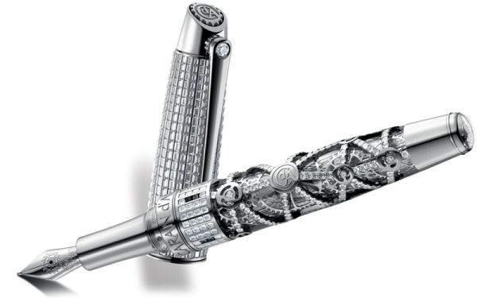

A pen (Latin: penna, feather) is a writing implement used to apply ink to a surface, such as paper, for writing or drawing.
Historically,
reed pens, quill pens, and dip pens were used, with a nib dipped in ink. Technical pens such as the Rapidograph allow precise adjustment of line width.
Modern types also include ballpoint, rollerball, fountain, and felt or ceramic tip pens.
The pen is mightier than the sword if the sword is very short, and the pen is very sharp.